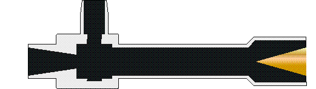
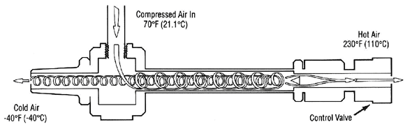
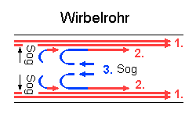
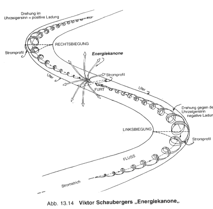
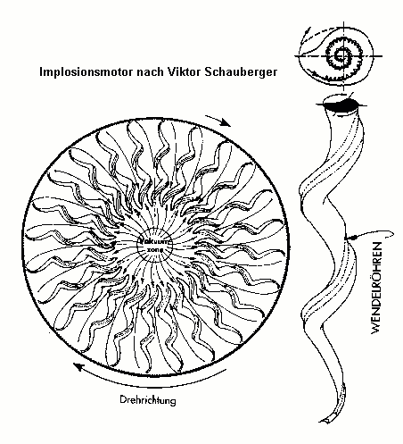

Wirbelrohre und Mäander Flüssigkeit oder komprimierte Luft wird unter Druck schräg in ein Rohr eingeströmt, so daß diese in Rotation am Inneren der Rohrwand gelangt. Die kälteren Anteile sammeln sich innen in der Rohr-Mittelachse und werden durch eine 'Absperrung' umgelenkt in die Gegenrichtung und dort entnommen, die wärmeren Anteile werden in einem Ringbereich geradeaus durchgelassen.  Quelle Die
Frage ist: Warum klappt die Umlenkung so leicht (ohne Chaoswirbel),
und warum trennt sich überhaupt heiß und kalt ? Variante
Trennung: 
Für mich hat ein Wirbelrohr bereits eine Atomstruktur: Die heiße Strömung verläuft parallel zum Mutterfeld (hier lediglich der Einströmfluss) und man könnte die Effektivität mit Hilfe der Gravitation verbessern, indem man es senkrecht stellt mit dem heißen Auslass nach unten. Die aufwärtsführende Gegenströmung ist nur das große Fraktal von Mikrowirbeln (als Überlagerung vieler kleinen), in denen sich die Strömung sowieso bewegt (Torkado-Mittelschlauch=AtomKern), deswegen die unproblematische Umlenkung, diese findet nicht nur am Rohrende, sondern überall statt. Wenn ein natürlicher Flusslauf in Mäandern, also abwechselnden Rechts- und Linkskurven verläuft, dann wird in den Kurven das Wasser am steilen Außenufer von unten nach oben getragen und rotiert dort quer zum Flußlauf und in der flachen Innenkurve von oben nach unten, wobei es länger 'fallend beschleunigt'. Soweit wie im Wirbelrohr, aber durch die Mäander unsymmetrischer, so dass die Natur - neben dem Gefälle - die Gravitation als weiteren Antrieb nutzt. Dabei wird es in der Flussmitte kalt und es gibt einen rückwärts gerichteten Mittelstrom, der bis zur vorgehenden Kurve auf den andersherum gewendelten Hauptstrom trifft und mit ihm chaotisch verwirbelt. Durch diese Verwirbelung lagert sich Sand und Gestein ab und der Fluss wird sehr flach und breit und bildet immer genau zwischen zwei Kurven eine Furt. In der Mitte bleiben trotzdem die Wirbel-Zusammenstöße, aber sie sind aus Platzmangel zerkleinert wie Korn in einer Mühle (Schaubergers 'Energiekanone'). In Flussrichtung nach der Furt hat der Kurvenwirbel die Richtung geändert, was er dem Gegenstrom aus der noch kommenden Kurve zu verdanken hat. Ansonsten könnte er gar nicht "mit Anlauf" von unten nach oben in die steile Gegenkuve gehen.  Nur Schauberger war so schlau, seinen Wirbelrohren gleich Mäander (ohne Richtungswechsel !) zu verpassen und sie senkrecht zu stellen oder durch Rotation der Zentrifugalkraft auszusetzen. Er hat die Natur begriffen. 
Meine Email-Adresse: info@aladin24.de
|